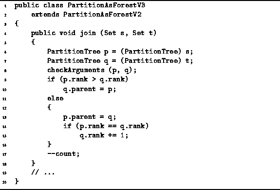

Data Structures and Algorithms
with Object-Oriented Design Patterns in Java
Data Structures and Algorithms
with Object-Oriented Design Patterns in JavaThe union-by-size join algorithm described above controls the heights of the trees indirectly by basing the join algorithm on the sizes of the trees. If we explicitly keep track of the height of a node in the node itself, we can accomplish the same thing.
Program  gives an implementation of the join
method that always attaches the shorter tree under the root of the taller one.
This method assumes that the rank field is used to keep
track of the height of a node.
(The reason for calling it rank rather than height
will become evident shortly).
gives an implementation of the join
method that always attaches the shorter tree under the root of the taller one.
This method assumes that the rank field is used to keep
track of the height of a node.
(The reason for calling it rank rather than height
will become evident shortly).

Program: PartitionAsForest class union-by-rank join method.
The only time that the height of node increases is when joining two trees that have the same height. In this case, the height of the root increases by exactly one. If the two trees being joined have different heights, attaching the shorter tree under the root of the taller one has no effect on the height of the root.
Unfortunately, there is a slight complication if we combine union-by-height with the collapsing find. Since the collapsing find works by moving nodes closer to the root, it affects potentially the height of any node moved. It is not at all clear how to recompute efficiently the heights that have changed. The solution is not to do it at all!
If we don't recompute the heights during the collapsing find operations, then the height fields will no longer be exact. Nevertheless, the quantities remain useful estimates of the heights of nodes. We call the estimated height of a node its rank and the join algorithm which uses rank instead of height is called union by rank .
Fortunately, Theorem applies equally well when when
union-by-rank is used.
That is, the height of tree which contains n nodes is  .
Thus, the worst-case running time for the find operation
grows logarithmically with n.
And as before, collapsing find only makes things better.
.
Thus, the worst-case running time for the find operation
grows logarithmically with n.
And as before, collapsing find only makes things better.
 Copyright © 1998 by Bruno R. Preiss, P.Eng. All rights reserved.
Copyright © 1998 by Bruno R. Preiss, P.Eng. All rights reserved.